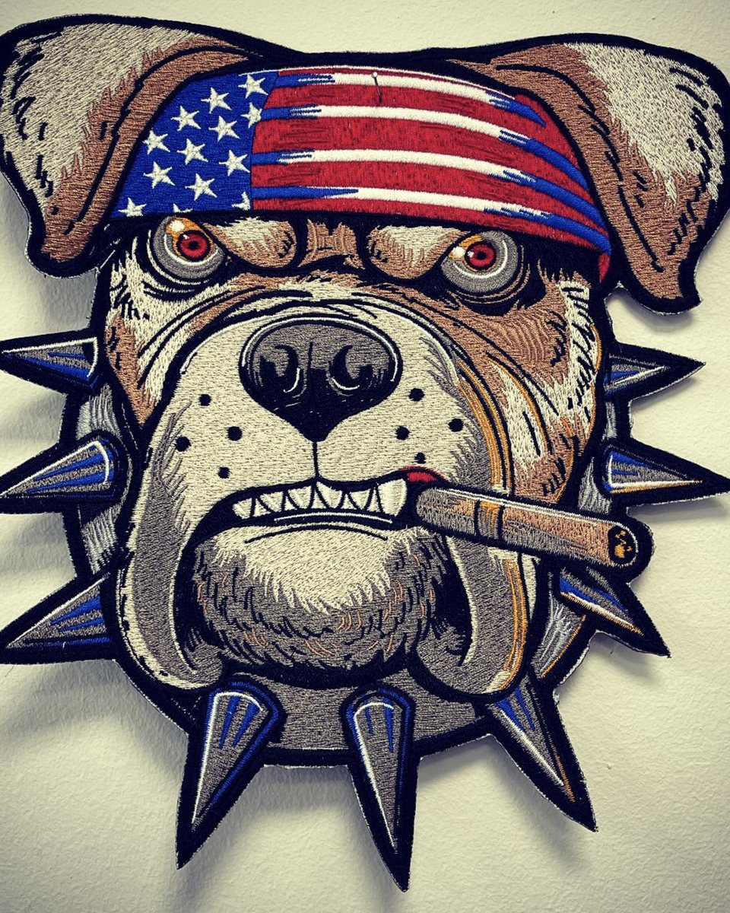

Nášivky
Samostatné výšivky k nažehlení, přilepení nebo na suchý zip. Na bundy, batohy, dresy i čepice.
Drží líp než novoroční předsevzetí.
Nášivky, výšivky a reklamní textil pro firmy, týmy, spolky i jednotlivce.
Profesionální strojová výšivka na kvalitních materiálech a nabídka přesně na míru. Pošlete nápad, zbytek vyšijeme my.
Kalkulace zdarma a nezávazně. Slibujeme, že to nebude píchat.

Pošlete nápad, my spočítáme cenu. Bez závazků a bez drobného písma.
Počítáno od schválení vzoru. Ať to máte na sobě co nejdřív.
Kvalitní viskózové nitě s hedvábným leskem. Na výsledku je to poznat.
Jedna nášivka, nebo celá firemní kolekce. Každý je pro nás stejně důležitý.
Tři disciplíny, jedna jehla. Vyberte, co potřebujete, nebo nám rovnou napište, co máte v hlavě.
Samostatné výšivky k nažehlení, přilepení nebo na suchý zip. Na bundy, batohy, dresy i čepice.
Drží líp než novoroční předsevzetí.
Vyšijeme váš vzor na vlastní textil, nebo na textil z naší nabídky.
Vaše logo, vaše triko, naše jehla.
Oblečení pro firmy, týmy a akce. Ať je na první pohled jasné, kdo k sobě patří.
Teambuilding začíná u stejných triček.
Žádná byrokracie. Vy pošlete nápad, my se postaráme o zbytek a každý krok vám dáme ke schválení.
Logo, obrázek, nebo jen nápad na ubrousku. Stačí PNG, JPG, PDF, SVG nebo AI.
Spočítáme cenu podle velikosti, složitosti a počtu kusů. Zdarma a nezávazně.
Pošleme vám náhled výšivky. Dokud neřeknete ano, neuděláme ani steh.
Do 3–7 dní od schválení vzoru je balík na cestě. Doprava jednotně 100 Kč.
Mezi naše zákazníky patří Barrandov, Lukoil, Hotel Berg, TJ Sokol Zeměchy, Multiprint, City Flex Gym, SOS dekorace a Auto Černý.
Šijeme na japonském stroji Tajima a viskózových nitích Marathon. Proto se výšivka leskne jako hedvábí.
Až 15 barev nití v jednom vzoru.
Nenašli jste odpověď? Zavolejte na +420 734 395 056, nebo napište do formuláře níže.
Vyplňte, co víte. Co nevíte, doladíme spolu. Kalkulaci posíláme zdarma a nezávazně.
Poptávka je u nás. Mrkneme na ni a ozveme se vám s kalkulací.
V pracovní dny od 8 do 17 jsme na telefonu i u stroje. Na provozovnu se můžete zastavit po předchozí domluvě.
Návštěva po domluvě
Flavio company s.r.o.
IČ 03923258 · DIČ CZ03923258
Sídlo: Nad Rybníkem 180, Zeměchy, 278 01 Kralupy nad Vltavou
Zapsaná v obchodním rejstříku u Městského soudu v Praze, oddíl C, vložka 239908
Nezbytné cookies potřebujeme, aby web fungoval. Ostatní zapneme jen s vaším souhlasem a pomůžou nám zjistit, co na webu funguje. Více informací